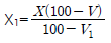
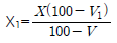
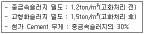
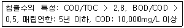
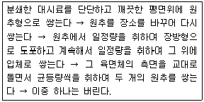
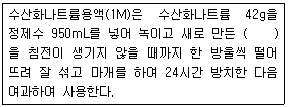
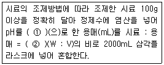
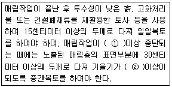

폐기물처리기사 (2011-06-12 기출문제)
1과목: 폐기물 개론
1. 파쇄장치 중 전단식 파쇄기에 관한 설명으로 옳지 않은 것은?
- 고정칼이나 왕복칼 또는 회전칼을 이용하여 폐기물을 절단한다.
- 충격파쇄기에 비해 대체적으로 파쇄속도가 빠르다.
- 충격파쇄기에 비해 이물질의 혼입에 대하여 약한다.
- 파쇄물의 크기를 고르게 할 수 있다.
(정답률: 알수없음)

2. 폐기물 내 함유된 리그닌의 양으로 생분해도를 평가하기 위한 관계식으로 옳은 것은? [단, BF: 생물학적 분율(휘발성 고형분함량 기준)LC: 휘발성 고형분중 리그린 함량(건조무게 %로 표시)]
- BF = 0.83 - (0.028×LC)
- BF = 0.83 + (0.028×LC)
- BF = 0.83 / (0.028×LC)
- BF = 0.83 × (0.028×LC)
(정답률: 알수없음)
3. 함수율 40%인 쓰레기를 건조시켜 함수율이 15%인 쓰레기를 만들었다면, 쓰레기 톤당 증발되는 수분량은?
- 약 185kg
- 약 294kg
- 약 326kg
- 약 425kg
(정답률: 알수없음)
4. 탈수전의 슬러지량(m3)은 X, 함수율은 V(%)이고, 탈수후의 슬러지량(m3)은 X1, 함수율은 V1(%)일 때 X와 X1의 관계식으로 옳은 것은?
- X1=X(100-V)×100
- X1=X(100-V1)×100


(정답률: 알수없음)
5. 가로의 청결상태를 기준으로 청소상태를 평가하는 것은?
- CMP
- CEI
- USI
- USE
(정답률: 알수없음)
6. 선별을 위해 투입한 폐기물의 량이 1ton/h이고 회수량은 600kg/h(그중 회수대상물질은 550kg/h)이며 제거량은 400kg/h(그중 회수대상물질은 70kg/h)일 때 선별효율(Rietema식 적용)은?
- 70.5%
- 72.3%
- 75.6%
- 78.4%
(정답률: 알수없음)
7. 폐기물 성상을 분석한 결과 가연성물질이 중량비로 20%였다. 밀도가 500kg/m3인 폐기물 10m3이 가지는 가연성 물질의 양은?
- 200kg
- 500kg
- 700kg
- 1000klg
(정답률: 알수없음)
8. 함수율 90%인 슬러지의 비중이 1.02이었다. 이 슬러지를 진공여과기로 탈수하여 함수율이 40%인 슬러지를 얻었다면 이 슬러지의 비중은? (단, 슬러지내 고형물 비중은 일정함)
- 약 1.045
- 약 1.089
- 약 1.133
- 약 1.167
(정답률: 알수없음)
9. 슬러지 중 비중 0.86인 유기성 고형물이 6%, 비중 2.02인 무기성 고형물의 함량이 20% 일때 이 슬러지의 비중은?
- 1.02
- 1.⑤
- 1.10
- 1.16
(정답률: 알수없음)
10. 발생 쓰레기 밀도 450kg/m3, 차량적재용량 20m3, 압축비 1.8, 쓰레기 발생량 1.2kg/인 · 일, 적재함이용률 85%, 차량대수 5대, 수거대상지역 인구 80,000인, 수거인부 15인이며, 차량은 동시운행 될 때, 쓰레기 수거는 1주일에 최소 몇 회 이상하여야 하는가?
- 8
- 10
- 12
- 14
(정답률: 알수없음)
11. 쓰레기 발생량 예측방법 중 모든 인자를 시간에 대한 함수로 나타낸 후, 시간에 대한 함수로 표현된각 영향인자들 간의 상관관계를 수식화하는 방법은?
- 경향법
- 다중회귀모델
- 회귀직선모델
- 동적모사모델
(정답률: 알수없음)
12. 50ton/hr 규모의 시설에서 평균크기가 30.5cm인 혼합된 도시 폐기물을 최종크기 5.1cm로 파쇄하기 위해 필요한 동력은? (단, 평균크기를 15.2cm에서 5.1cm로 파쇄하기 위한 에너지 소모율은 15 kW· hr/ton이며, 킥의 법칙적용)
- 약 1230 kW
- 약 1450 kW
- 약 1680 kW
- 약 1840 kW
(정답률: 알수없음)
13. 2,000,000ton/year의 폐기물 수거에 4500명의 인부가 종사한다면 MHT는? (단, 수거인부의 1일 작업시간은 8시간, 1년 작업일수 300일)
- 2.8
- 3.4
- 4.6
- 5.4
(정답률: 알수없음)
14. 쓰레기 수거노선 설정요령으로 옳지 않은 것은?
- 지형이 언덕인 경우는 내려가면서 수거한다.
- U자 회전을 피하여 수거한다.
- 아주 많은 양의 쓰레기가 발생되는 발생원은 하루 중 가장 먼저 수거한다.
- 시계 반대 방향으로 수거노선을 설정한다.
(정답률: 알수없음)
15. 폐기물의 밀도는 0.7ton/m3이고 이를 적재량 15ton의 트럭 24대로 운반하고자 한다. 운반 가능한 폐기물의 총량은? (단, 기타 조건은 고려하지 않음)
- 약 515 m3
- 약 685 m3
- 약 775 m3
- 약 835 m3
(정답률: 알수없음)
16. 어느 폐기물의 밀도가 0.45ton/m3이던 것을 압축기로 압축하여 0.75ton/m3로 하였다. 이때 부피감소율은?
- 32%
- 40%
- 44%
- 56%
(정답률: 알수없음)
17. 적환장에 관한 설명으로 옳지 않은 것은?
- 수거지점으로부터 처리장까지의 거리가 먼 경우에 중간에 설치한다.
- 슬러지수송이나 공기수송방식을 사용할 때에는 설치가 어렵다.
- 작은 용기로 수거한 쓰레기를 대형트럭에 옮겨 싣는 곳이다.
- 저밀도 주거지역이 존재할 때 설치한다.
(정답률: 알수없음)
18. 폐기물 선별에 관한 설명으로 옳지 않은 것은?
- 와전류식 선별은 전자석유도에 관한 패러데이법칙을 기초로 한다.
- 풍력선별기에 있어 전형적인 폐기물/공기비는 2~7이다.
- 펄스풍력선별기는 유속의 변화를 이용하는 장치이다.
- 정전기적 선별을 이용하면 플라스틱에서 종이를 선별할 수 있다.
(정답률: 알수없음)
19. 관거(pipe line)를 이용하여 쓰레기를 수거할 때의 단점으로 가장 거리가 먼 것은?
- 가설 후에 경로변경이 곤란하고 설치비가 비싸다.
- 대형 쓰레기는 파쇄 · 압축 등의 전처리를 해야한다.
- 2.5km 이내의 단거리 이송은 경제성 문제로 현실성이 없다.
- 쓰레기의 발생밀도가 높은 인구밀집지역 및 아파트지역 등에서 현실성이 있다.
(정답률: 알수없음)
20. 파쇄기의 마모가 적고 비용이 적게 소요되는 장점이 있으나, 금속, 고무의 파쇄는 어렵고, 나무나 플라스틱류, 콘크리트덩이, 건축폐기물의 파쇄에 이용되며, Rotary Mill식, Impact crusher 등이 해당되는 파쇄기는?
- 충격파쇄기
- 습식파쇄기
- 왕복전단파쇄기
- 압축파쇄기
(정답률: 알수없음)
2과목: 폐기물 처리 기술
21. 다음 중 악취성 물질인 CH3SH를 나타낸 것은?
- 메틸오닌
- 다이메틸설파이드
- 메틸메르캅탄
- 메틸케톤
(정답률: 알수없음)
22. 중금속슬러지를 시멘트로 고형화 처리할 경우 다음 조건에서 부피변화율(VCF)은?

- 1.04
- 1.14
- 1.24
- 1.34
(정답률: 알수없음)
23. 침출수의 특성이 다음과 같을 때 처리공정의 효율성의 연결로 가장 적합한 것은?

- 생물학적처리- 양호, 화학적침전(석회투여)-양호, 화학적산화- 불량, 이온교환수지- 불량
- 생물학적처리- 양호, 화학적침전(석회투여)-불량, 화학적산화- 불량, 이온교환수지- 양호
- 생물학적처리- 양호, 화학적침전(석회투여)-불량, 화학적산화- 양호, 이온교환수지- 양호
- 생물학적처리- 양호, 화학적침전(석회투여)-불량, 화학적산화- 불량, 이온교환수지- 불량
(정답률: 알수없음)
24. 혐기성 소화와 비교할 때 호기성 소화의 특징과 가장 거리가 먼 것은?
- 동력이 많이 소요된다.
- 비교적 운전이 쉽고 상징수의 수질도 양호한 편이다.
- 소화 슬러지의 탈수성이 우수하다.
- 소화 슬러지의 발생량이 많다.
(정답률: 알수없음)
25. 합성차수막 중 CR의 장 ‧ 단점에 관한 설명으로 가장 거리가 먼 것은?
- 가격이 비싸다.
- 마모 및 기계적 충격에 약하다.
- 접합이 용이하지 못하다.
- 대부분의 화학물질에 대한 저항성이 높다.
(정답률: 알수없음)
26. 침출수를 처리하는 방법 중 펜톤(fenton)산화에 관한 설명으로 옳지 않은 것은?
- 슬러지 생산량이 적고, COD는 증가하고 BOD는 감소하는 경향을 보인다.
- 난분해성 물질을 생분해성 물질로 변화시킨다.
- 펜톤의 산화는 pH 3.5 정도에서 가장 효과적인 것으로 알려져 있다.
- 펜톤 시약의 반응시간은 철염과 과산화수소수의 주입농도에 따라 변화된다.
(정답률: 알수없음)
27. 쓰레기의 밀도가 750kg/m3이며 매립된 쓰레기의 총량은 30,000ton이다. 여기에서 유출되는 침출수는 약 몇 m3/년인가? (단, 침출수 발생량은 강우량의 60%이고, 쓰레기의 매립높이는 6m이며, 연간 강우량은 1,300mm이다.)
- 4600m3/년
- 5200m3/년
- 6300m3/년
- 7100m3/년
(정답률: 알수없음)
28. 포도당(C6H12O6)만으로 된 유기물 3.0kg이 혐기성 상태에서 완전분해 된다면 생산되는 메탄의 용적(Sm3)은?
- 약 0.66
- 약 1.12
- 약 1.43
- 약 1.86
(정답률: 알수없음)
29. 매일 평균 200t의 쓰레기를 배출하는 도시가 있다. 매립지의 평균 매립 두께를 5m, 매립밀도를 0.8t/m3로 가정할 때 향후 1년간(1년은 360일로 가정)의 쓰레기 매립을 위한 최소 매립지 면적은? (단, 기타 조건은 고려하지 않음)
- 18000m2
- 23000m2
- 34000m2
- 42000m2
(정답률: 알수없음)
30. 고형물농도 80kg/m3의 농축 슬러지를 1시간에 8m3 탈수시키려 한다. 슬러지 중의 고형물당 소석회 첨가량을 중량기준으로 20%로 첨가했을 때 함수율 90%의 탈수 cake가 얻어졌다. 이 탈수 cake의 겉보기 비중량을 1,000kg/m3로 할 경우 발생 cake의 부피는?
- 약 5.5m3/hr
- 약 6.6m3/hr
- 약 7.7m3/hr
- 약 8.8m3/hr
(정답률: 알수없음)
31. 토양세척법(Soil Washing)이 다른 토양복원기술에 비하여 갖는 장점으로 옳지 않은 것은?
- 외부환경의 조건변화에 대한 영향이 적다.
- 자체적인 조전조절이 가능한 개방형 공정이며, 고농도의 휴믹질이 존재하는 경우에도 전처리가 불필요하다.
- 부지내에서 유해오염물의 이송없이 바로 처리할 수 있다.
- 오염토양 부피의 단시간내의 효율적인 급감으로 2차 처리비용을 절감할 수 있다.
(정답률: 알수없음)
32. 다음 중 슬러지 처리에 있어 가장 먼저 고려되어야 하는 사항은
- 수분제거에 의한 부피 감소
- 병원균의 제거
- 미관 등 각종 피해를 미치는 악취 제거
- 알칼리도 감소촉진
(정답률: 알수없음)
33. 인구 100만명인 어느 도시의 쓰레기 발생율은 2.0 kg/인·일이다. 아래의 조건들에 따라 쓰레기를 매립하고자 할 때 연간 매립지의 소요면적은? (단, 매립쓰레기 압축밀도 500 kg/m3, 매립지 Cell 1층의 높이 5m 이며, 총 8개의 층으로 매립하며, 기타 조건은 고려하지 않음)
- 32500 m2
- 34200 m2
- 36500 m2
- 38200 m2
(정답률: 알수없음)
34. 함수율이 90%인 슬러지의 겉보기 비중이 1.02이었다. 이 슬러지를 진공여과기로 탈수하여 함수율이 50%인 슬러지를 얻었다면 이 슬러지가 갖는 겉보기 비중은? (단, 물의 비중은 1.0 으로 한다.)
- 1.01
- 1.11
- 1.21
- 1.31
(정답률: 알수없음)
35. 어느 매립지에서 침출된 침출수 농도가 반으로 감소하는데 약 3.5년이 걸렸다면 이 침출수 농도가 95% 분해되는 소요되는 시간은? (단, 침출수 분해 반응은 1차 반응)
- 약 9년
- 약 11년
- 약 13년
- 약 15년
(정답률: 알수없음)
36. 6%의 고형물을 함유하는 690m3의 슬러지를 진공 여과시켜 75%의 수분을 함유하는 슬러지 케이크로 만든다면 생산되는 슬러지 케이크의 양은? (단, 여과 전, 후의 슬러지의 비중은 1.0으로 한다.)
- 약 228 m3
- 약 215 m3
- 약 183 m3
- 약 166 m3
(정답률: 알수없음)
37. 6.3%의 고형물을 함유한 150,000kg의 슬러지를 농축한 후, 농축슬러지를 소화조로 이송할 경우의 농축슬러지의 무게는 70,000 kg이다. 이때 소화조로 이송한 농축된 슬러지의 고형물 함유율은? (단, 슬러지의 비중은 1.0으로 가정, 상등액의 고형물 함량은 무시한다.)
- 11.5%
- 13.5%
- 15.5%
- 17.5%
(정답률: 알수없음)
38. 폐기물 고화처리법 중 석회기초법에 관한 설명으로 옳지 않은 것은?
- 석회-포졸란 화학반응이 잘 알려져 있으며 탈수가 필요하다.
- 두가지 폐기물을 동시에 처리할 수 있다.
- 공정운전이 간단하고 용이하나 최종 처분물질의 양이 증가한다.
- pH가 낮을 때 폐기물성분의 용출 가능성이 증가한다.
(정답률: 알수없음)
39. 총고형물 중 유기물이 60%이고 함수율이 98%인 슬러지를 소화조에 500m3/day로 투입하여 30일 소화시켰더니 유기물의 2/3가 가스화 또는 액화하여 함수율 90%인 소화 슬러지가 얻어졌다고 한다. 소화 후 슬러지량은? (단, 슬러지의 비중 1.0)
- 60m3/day
- 80m3/day
- 100m3/day
- 120m3/day
(정답률: 알수없음)
40. Humus의 특징으로 옳지 않은 것은?
- 뛰어난 토양 개량제이다.
- C/N비(30~50)가 높다.
- 물 보유력과 양이온교환능력이 좋다.
- 짙은 갈색이다.
(정답률: 알수없음)
3과목: 폐기물 소각 및 열회수
41. 다음 연소실 내 가스와 폐기물의 흐름에 따른 구분 중 폐기물의 이송방향과 연소가스의 흐름방향이 같은 형식으로 폐기물의 발열량이 상당히 높은 경우에 적합한 형식은?
- 향류식
- 병류식
- 교류식
- 회류식
(정답률: 알수없음)
42. 프로판(C3H8):부탄(C4H10)이 [40%:60%]의 용적비로 혼합된 기체 1Sm3이 완전연소될 때의 CO2 발생량은(Sm3)은?
- 3.2 Sm3
- 3.4 Sm3
- 3.6 Sm3
- 3.8 Sm3
(정답률: 알수없음)
43. Rotary Kiln에 관한 설명으로 가장 거리가 먼 것은?
- 액상이나 고상의 여러가지 폐기물을 썩어서 처리할 수 있다.
- 로에서의 공기의 유출이 크다.
- 비교적 열효율이 높은 편이다.
- 대체로 예열, 혼합, 파쇄 등 전처리 없이 주입이 가능하다.
(정답률: 알수없음)
44. 황화수소 1Sm3 완전연소에 필요한 이론공기량은? (단, 황은 완전연소하여 전량 이산화황으로 된다.)
- 5.1 Sm3
- 7.1 Sm3
- 9.1 Sm3
- 11.1 Sm3
(정답률: 알수없음)
45. 소각로의 통풍장치 중 강제통풍 방법과 가장 거리가 먼 것은?
- 진공통풍
- 가압통풍
- 흡입통풍
- 평형통풍
(정답률: 알수없음)
46. 저위발열량이 3500 kcal/Sm3인 가스연료의 이론연소온도는? (단, 이론연소가스량은 10Sm3/Sm3, 연료연소가스의 평균정압비열은 0.4 kcal/Sm3 · ℃, 기준온도는 25℃, 공기는 예열되지 않으며, 연소 가스는 해리되지 않는 것으로 한다.)
- 850℃
- 900℃
- 950℃
- 1000℃
(정답률: 알수없음)
47. RDF(Refuse Drived Fuel)가 갖추어야 하는 조건에 관한 설명으로 가장 거리가 먼 것은?
- 저장 및 수송이 편리하도록 개질되어야 한다.
- RDF용 소각로 제작이 용이하도록 발열량이 높지 않아야 한다.
- 쓰레기 원료 중에 비가연성 성분이나 연소 후 잔류하는 재의 양이 적어야 한다.
- 조성 배합율이 균일하여야 하고 대기오염이 적어야 한다.
(정답률: 알수없음)
48. 연소과정에서 등가비가 1보다 큰 경우는?
- 과잉공기가 공급된 경우
- 연료가 이론적인 경우보다 적을 경우
- 완전 연소에 알맞은 연료와 산화제가 혼합될 경우
- 연료가 과잉으로 공급된 경우
(정답률: 알수없음)
49. 연소실의 부피를 결정하려고 한다. 연소실의 부하율은 3.6×105kcal/m3·hr이고 발열량이 1,600kcal/kg인 쓰레기를 1일 400ton 소각시킬 때 소각로의 연소실 부피(m3)는? (단, 소각로는 연속가동 한다.)
- 56m3
- 74m3
- 92m3
- 113m3
(정답률: 알수없음)
50. C, H, S의 중량비가 각각 87%, 11%, 2%인 중유를 공기비 1.3으로 연소시켜 배연 탈황 후 건조연소가스 중의 SO2농도를 측정한 결과 100ppm으로 나타났다. 이 배연탈황 장치의 탈황율은? (단, 연료중 S는 연소에 의해 전량 SO2로 전환된다.)
- 약 87%
- 약 90%
- 약 96%
- 약 98%
(정답률: 알수없음)
51. 폐기물 연소 후 배출되는 배기가스 중 염화수소 농도가 361ppm이고, 배기가스 부피가 2900 Sm3/hr일 때, 배기가스내 염화수소를 Ca(OH)2로 처리시 필요한 Ca(OH)2량은? (단, 표준상태를 기준으로 하고, Ca 원자량: 40, 처리 반응율은 100%로 한다.)
- 1.73 kg/hr
- 2.82 kg/hr
- 3.64 kg/hr
- 4.81 kg/hr
(정답률: 알수없음)
52. 기체연료의 장점과 가장 거리가 먼 것은?
- 점화, 소화가 용이하고 연소조절이 쉽다.
- 발열량이 크다.
- 회분이나 유해물질의 배출이 적다.
- 수송이나 저장이 용이하다.
(정답률: 알수없음)
53. 폐열회수를 위한 열교환기 중 공기예열기에 관한 설명으로 옳지 않은 것은?
- 굴뚝 가스 여열을 이용하여 연소용 공기를 예열 하여 보일러의 효율을 높이는 장치이다.
- 연료의 착화와 연소를 양호하게 하고 연소온도를 높이는 부대효과가 있다.
- 대표적으로 판상 공기예열기, 관형 공기예열기 및 재생식 공기예열기 등이 있다.
- 이코노마이저와 병용 설치하는 경우에는 공기예 열기를 고온축에 설치한다.
(정답률: 알수없음)
54. 저위발열량이 8000 kcal/kg의 중유를 연소시키는데 필요한 이론 공기량은? (단, Rosin식 적용)
- 약 8.8 Sm3/kg
- 약 9.6 Sm3/kg
- 약 10.5 Sm3/kg
- 약 11.5 Sm3/kg
(정답률: 알수없음)
55. NO 400ppm을 함유한 연소가스 300,000Sm3/hr을 암모니아를 환원제로 하는 선택적 촉매환원법으로 처리하고자 한다. NH3의 반응율을 80%로 할 때 필요한 NH3량(kg/hr)은?
- 약 62
- 약 69
- 약 71
- 약 76
(정답률: 알수없음)
56. 화격자 소각로의 연소능력이 300 kg/m2 · hr이다. 10000kg/d의 쓰레기를 1일 8시간 운전하여 소각한다면 로의 면적은?
- 2.4m2
- 3.4m2
- 4.2m2
- 5.3m2
(정답률: 알수없음)
57. 쓰레기를 1일 100ton 소각하여 소각 후 남은 재는 전체 소각한 쓰레기 질량의 20% 라고 한다. 남은 재의 용적이 15m3일 때 재의 밀도는?
- 1.64 ton/m3
- 1.33 ton/m3
- 1.24 ton/m3
- 1.16 ton/m3
(정답률: 알수없음)
58. 탄소, 수소의 중량비가 각각 86%, 14%인 폐유를 평균 100kg/hr로 소각한 경우, 배기가스의 분석 결과가 CO2 12.5%, O2 3.5%, N2 84 이었다. 이때 폐유 소각에 필요한 시간당 공기량은?
- 약 1960 Sm3/hr
- 약 1790 Sm3/hr
- 약 1590 Sm3/hr
- 약 1350 Sm3/hr
(정답률: 알수없음)
59. 배기가스성분을 검사해보니 O2량이 5.25%(부피기준)였다. 완전연소로 가정한다면 공기비는? (단, N2는 79%)
- 1.33
- 1.54
- 1.84
- 1.94
(정답률: 알수없음)
60. 무게비가 탄소 85w%, 수소 13w%, 황 2w%의 조성인 중유의 완전연소에 필요한 이론 산소량은?
- 약 1.24 Sm3/kg
- 약 2.33 Sm3/kg
- 약 3.15 Sm3/kg
- 약 4.17 Sm3/kg
(정답률: 알수없음)
4과목: 폐기물 공정시험기준(방법)
61. 대상폐기물의 양과 채취시료의 최소 수로 옳은 것은?
- 10톤 - 14
- 20톤 - 20
- 200톤 - 36
- 900톤 - 42
(정답률: 알수없음)
62. 원자흡수분광광도법에 의한 카드뮴 분석방법에 관한 설명으로 옳은 것은?
- 측정파장 324.7nm 에서의 정량한계는 0.04mg/L이다.
- 염이 많은 시료를 분석할 경우에는 아연을 첨가하여 묽혀서 분석한다.
- 분석시 불꽃이 안정화 되지 않고 신호잡음이 발생할 경우 아세틸렌의 유량을 5배 정도 늘려 감도를 조정하여 분석한다.
- 낮은 농도의 카드뮴은 암모늄 피롤리딘 다이티오카바메이트(APDC)와 착물을 생성시켜 메틸아이소부틸케톤(MIBK)으로 추출하여 공기-아세틸렌 불꽃에 주입하여 분석한다.
(정답률: 알수없음)
63. 아래와 같은 방식으로 계속 폐기물 시료의 크기를 줄이는 방법은?(오류 신고가 접수된 문제입니다. 반드시 정답과 해설을 확인하시기 바랍니다.)

- 원추 2분법
- 구획법
- 교호삽법
- 원추 4분법
(정답률: 알수없음)
64. 기체크로마토그래피에 의한 폴리클로리네이티드비페닐(PCBs) 분석방법에 관한 설명으로 옳지 않은 것은?
- 알칼리 분해를 하여도 헥산층에 유분이 존재할 경우에는 실리카겔 컬럼으로 정제조작을 하기전 메틸알콜과 클로로포름의 혼합액으로 추출하여 유분을 분리한다.
- 비항침성 고상 폐기물의 정량한계는 시료채취방법에 따라 표면 채취법은 0.⑤ ㎍/100 cm2 이다.
- 유리기구류는 세정제, 뜨거운 수돗물 그리고 정제수로 차례로 닦아준 후 400℃에서 15 ~ 30분 동안 가열한 후 식혀 알루미늄박으로 덮어 깨끗한 곳에 보관하여 사용한다.
- 전자포획검출기로 하여 PCB를 측정할 때 프탈레이트가 방해할 수 있는데 이는 플라스틱 용기를 사용하지 않음으로서 최소화 할 수 있다.
(정답률: 알수없음)
65. 폐기물 시료용기에 기재해야 할 사항으로 가장 거리가 먼 것은?
- 시료번호
- 채취시간 및 일기
- 채취책임자 이름
- 채취장비
(정답률: 알수없음)
66. 다음은 폐기물공정시험기준(방법)에 사용되는 시약의 제조에 관한 설명이다. ( )안에 가장 적합한 것은?

- 수산화바륨용액(포화)
- 아세트산납 · 3수화물용액
- 수산화칼륨/에틸알콜용액
- 황산용액(0.5M)
(정답률: 알수없음)
67. 흡광광도법에서 투과도가 0.24일 경우 흡광도는?
- 0.32
- 0.42
- 0.52
- 0.62
(정답률: 알수없음)
68. 다음은 시료 용출시험방법에 관한 설명이다. ( )안에 알맞은 것은?

- ① 4.5 ~ 5.5, ② 1:5
- ① 4.5 ~ 5.5, ② 1:10
- ① 5.8 ~ 6.3, ② 1:5
- ① 5.8 ~ 6.3, ② 1:10
(정답률: 알수없음)
69. 유리전극법에 의한 수소이온농도 측정시 간섭물질에 관한 설명으로 옳지 않은 것은?
- pH 10 이상에서 나트륨에 의해 오차가 발생할 수 있는데 이는 “낮은 나트륨 오차 전극”을 사용하여 줄일 수 있다.
- 유리전극은 일반적으로 용액의 색도, 탁도, 콜로이드성 물질드, 산화 및 환원성 물질들 그리고 염도에 의해 간섭을 많이 받는다.
- 기름 층이나 작은 입자상이 전극을 피복하여 pH측정을 방해할 경우에는 피복물을 부드럽게 문질러 닦아내거나 세척제로 닦아낸 후 정제수로 세척하고 부드러운 천으로 수분을 제거하여 사용한다.
- 피복물을 제거할 때는 염산(1+9)용액을 사용할 수 있다.
(정답률: 알수없음)
70. 유도결합플라스마-원자발광분광기의 일반적인 구성으로 옳은 것은?
- 광원부, 파장선택부, 시료부 및 측광부로 구성된다.
- 시료도입부, 고주파전원부, 광원부, 분광부, 연산 처리부 및 기록부로 구성된다.
- 시료도입부, 시료원자화부, 분광부, 측광부, 연산 처리부로 구성된다.
- 광원부, 분광부, 단색화부, 고주파전원부, 측광부 및 기록부로 구성된다.
(정답률: 알수없음)
71. 폐기물이 1톤 미만 야적되어 있는 적환장에서 최소 시료 채취 총량으로 가장 적합한 것은?
- 50g
- 100g
- 600g
- 1800g
(정답률: 알수없음)
72. 다음 중 자외선/가시선 분광법과 원자흡수분광 광도법의 두 가지 시험방법으로 모두 분석할 수 있는 항목으로 가장 거리가 먼 것은? (단, 폐기물공정 시험기준(방법)에 준함)
- 크롬
- 카드뮴
- 비소
- 시안
(정답률: 알수없음)
73. 원자흡수분광광도법(환원기화법)으로 수은을 측정코자 한다. 시료의 전처리 과정 중 과잉의 과망간산칼륨을 분해하기 위해 사용하는 용액은?
- 10W/V% 이염화주석용액(tin chloride dihydrate)
- (1+4) 암모니아수
- 10W/V% 염화하이드록시암모늄용액(hydroxyamine hydrochloride)
- 10W/V% 고황산칼륨(potassium persulfate)
(정답률: 알수없음)
74. 폐기물시료의 강열감량을 측정한 결과 다음과 같은 자료를 얻었다. 해당시료의 강열감량은? (단, 도가니의 무게(W1): 51.045g, 탄화전 도가니와 시료의 무게(W2): 92.345g, 탄화후 도가니와 시료의 무게(W3): 53.125g )
- 91%
- 93%
- 95%
- 97%
(정답률: 알수없음)
75. 원자흡수분광광도법에 의한 구리(Cu) 시험방법으로 옳은 것은?
- 정량범위는 440nm에서 0.2~4mg/L 정도이다.
- 사용가스는 공기 - 아세틸렌이다.
- 디에틸디티오와 반응하여 생성된 황색의 킬레이트 화합물의 흡광도를 측정한다.
- 표준편차율은 ±0.2 ~ 0.5% 범위이다.
(정답률: 알수없음)
76. 폐기물공정시험기준(방법)에서 사용하는 용어의 정의로 옳지 않은 것은?
- “고상폐기물” 이라 함은 고형물의 함량이 15% 이상인 것을 말한다.
- “항침성 고상폐기물” 이라 함은 종이, 목재 등 기름을 흡수하는 변압기 내부부재(종이, 나무와 금속이 서로 혼합되어 있어 분리가 어려운 경우를 포함한다)를 말한다.
- 시험조작 중 “즉시”란 10초 이내에 표시된 조작을 하는 것을 뜻한다.
- “바탕시험을 하여 보정한다”라 함은 시료에 대한처리 및 측정을 할 때, 시료를 사용하지 않고 같은 방법으로 조작한 측정치를 빼는 것을 뜻한다.
(정답률: 알수없음)
77. 다름 용기 중 취급 또는 저장하는 동안에 밖으로부터의 공기 또는 다른 가스가 침입하지 아니하도록 내용물을 보호하는 용기를 말하는 것은?
- 밀폐용기
- 기밀용기
- 밀봉용기
- 차광용기
(정답률: 알수없음)
78. 총칙에 관한 내용으로 옳지 않은 것은?
- “정밀히 단다”라 함은 규정된 양의 시료를 취하여 화학저울 또는 미량저울로 칭량함을 말한다.
- “정확히 취하여”라 하는 것은 규정한 양의 액체를 홀피펫으로 눈금까지 취하는 것을 말한다.
- “냄새가 없다” 라고 기재한 것은 냄새가 없거나, 또는 거의 없는 것을 표시하는 것이다.
- 방울수라 함은 20℃에서 정제수 10방울을 적하할 때, 그 부피가 약 1mL 되는 것을 뜻한다.
(정답률: 알수없음)
79. 6가 크롬을 원자흡수분광광도법으로 분석할 때에 관한 설명으로 옳지 않은 것은?
- 공기, 아세틸렌으로 분석시 아세틸렌 유량이 많은 쪽이 감도가 높지만 철, 니켈의 방해가 많다.
- 정량범위는 사용하는 장치 및 측정조건 등에 따라 다르나 248.5nm에서 0.0⑤ ~ 2.5 mg/L이다.
- 아세틸렌-산화이질소는 방해는 적으나 감도가 낮다.
- 염이 많은 시료를 분석할 때는 시료를 묽혀 분석하거나, 메틸아이소부틸케톤 등을 사용하여 추출하여 분석한다.
(정답률: 알수없음)
80. 유기인을 기체크로마토그래피로 분석할 때 헥산으로 추출하면 메틸디메톤의 추출율이 낮아질 수 있으므로 이에 대체하여 사용하는 물질로 가장 적합한 것은?
- 다이클로로메탄과 헥산의 혼합액(15:85)
- 메틸에틸케톤과 에탄올의 혼합액(15:85)
- 메틸에틸케톤과 헥산의 혼합액(15:85)
- 다이클로로메탄과 에탄올의 혼합액(15:85)
(정답률: 알수없음)
5과목: 폐기물 관계 법규
81. 다음은 관리형 매립시설의 복토기준에 관한 내용이다. ( )안에 내용으로 옳은 것은?

- ① 7일 ② 2%
- ① 7일 ② 5%
- ① 10일 ② 2%
- ① 10일 ② 5%
(정답률: 알수없음)
82. 폐기물 중간처리시설인 기계적 처리시설 기준으로 옳지 않은 것은?
- 용융시설(동력 10마력 이상인 시설로 한정한다)
- 압축시설(동력 10마력 이상인 시설로 한정한다)
- 파쇄 · 분쇄시설(동력 10마력 이상인 시설로 한정한다)
- 절단시설(동력 10마력 이상인 시설로 한정한다)
(정답률: 알수없음)
83. 폐기물처리시설의 유지 · 관리에 관한 기술관리를 대행할 수 있는 자와 가장 거리가 먼 것은?
- 「엔지니어링산업 진흥법」에 따라 신고한 엔지니어링 사업자
- 「기술사법」에 따른 기술사사무소(법에 따른 자격을 가진 기술사가 개설한 사무소로 한정한다)
- 「폐기물관리 및 설치신고에 관한 법률」에 따른 한국화학시험연구원
- 「한국환경공단법」에 따른 한국환경공단
(정답률: 알수없음)
84. 다음 중 폐기물관리법령상의 의료폐기물의 종류와 가장 거리가 먼 것은?
- 격리의료폐기물
- 일반의료폐기물
- 위해의료폐기물
- 유해의료폐기물
(정답률: 알수없음)
85. 음식물류 폐기물처리시설의 기술관리인의 자격기준으로 가장 거리가 먼 것은?
- 토목산업기사
- 산업안전기사
- 전기기사
- 화공산업기사
(정답률: 알수없음)
86. 폐기물 처리업자가 폐업을 한 경우 폐업 한 날부터 며칠이내에 구비서류를 첨부하여 시‧도지사 등에게 제출하여야 하는가?
- 5일 이내
- 7일 이내
- 15일 이내
- 20일 이내
(정답률: 알수없음)
87. 폐기물처리시설을 설치 ‧ 운영하는 자는 환경부령이 정하는 기간마다 정기검사를 받아야 한다. 음식물류 폐기물 처리시설인 경우의 검사기간 기준으로 옳은 것은?
- 최초 정기검사는 사용개시일부터 1년, 2회 이후의 정기검사는 최종 정기검사일부터 2년
- 최초 정기검사는 사용개시일부터 1년, 2회 이후의 정기검사는 최종 정기검사일부터 3년
- 최초 정기검사는 사용개시일부터 3개월, 2회 이후의 정기검사는 최종 정기검사일부터 3개월
- 최초 정기검사는 사용개시일부터 1년, 2회 이후의 정기검사는 최종 정기검사일부터 1년
(정답률: 알수없음)
88. 폐기물관리법에서 사용하는 용어의 정의로 옳지 않은 것은?
- “생활폐기물”이란 사업장폐기물 외의 폐기물을 말한다.
- “폐기물”이란 쓰레기, 연소재, 오니, 폐유, 폐산, 폐알칼리 및 동물의 사체 등으로서 사람의 생활이나 사업활동에 필요하지 아니하게 된 물질을 말한다.
- “지정폐기물”이란 사업장폐기물 중 폐유 · 폐산등 주변환경을 오염시킬 수 있거나 의료폐기물 등 인체에 위해를 줄 수 있는 해로운 물질로서 대통령령으로 정하는 폐기물을 말한다.
- “폐기물처리시설”이란 폐기물의 최초 및 중간처리시설과 최종처리시설로서 환경부령으로 정하는 시설을 말한다.
(정답률: 알수없음)
89. 에너지 회수기준으로 옳지 않은 것은?
- 다른 물질과 혼합하지 아니하고 해당 폐기물의 저위발열량이 킬로그램당 3천 킬로칼로리 이상일 것
- 에너지의 회수효율(회수에너지 총량을 투입에너지 총량으로 나눈 비율을 말한다)이 70퍼센트 이상을 것
- 회수열을 모두 열원(熱源))으로 스스로 이용하거나 다른 사람에게 공급할 것
- 환경부장관이 정하여 고시하는 경우에는 폐기물의 30퍼센트 이상을 원료나 재료로 재활용하고 그 나머지 중에서 에너지의 회수에 이용할 것
(정답률: 알수없음)
90. 폐기물중간처리업의 기준에서 지정폐기물 외의 폐기물(건설폐기물을 제외한다)을 중간처리하는 경우 시설기준으로 옳지 않은 것은?
- 소각전문의 경우 소각시설 : 시간당 처리능력 2톤 이상
- 기계적 처리전문의 경우 처리시설 : 시간당 처리능력 200킬로그램 이상
- 화학적 처리 또는 생물학적 처리전문의 경우 처리시설 : 1일 처리능력 10톤 이상
- 소각전문의 경우 보관시설 : 1일 처리능력의 10일분 이상 30일분 이하의 폐기물을 보관할 수 있는 규모의 시설
(정답률: 알수없음)
91. 다음 중 환경부령으로 정하는 음식물류 폐기물 배출자(농 · 수 · 축산물류 폐기물을 포함)에 해당되지 않는 자는?
- 「식품위생법」에 따른 집단급식소(「사회복지사업법」에 따른 사회복지시설의 집단급식소를 포함) 중 1일 평균 총 급식인원이 50명 이상인 집단급식소를 운영하는 자
- 「유통산업발전법」에 따른 대규모점포를 개설한자
- 「관광진흥법」에 따른 관광숙박업을 영위하는 자
- 「식품위생법」에 따른 식품접객업 중 휴게음식 점영업 및 일반음식점영업을 하는 자 중 특별자치도 또는 시 ‧ 군 ‧ 구의 조례로 정하는 자
(정답률: 알수없음)
92. 지정폐기물(의료폐기물은 제외) 보관창고에 설치해야 하는 지정폐기물의 종류, 보관가능 용량, 취급시 주의사항 및 관리책임자 등을 기재한 표지판 표지의 규격기준으로 옳은 것은? (단, 드럼 등 소형용기에 붙이는 경우)
- 가로 10센티미터 이상×세로 8센티미터 이상
- 가로 12센티미터 이상×세로 10센티미터 이상
- 가로 13센티미터 이상×세로 10센티미터 이상
- 가로 15센티미터 이상×세로 10센티미터 이상
(정답률: 알수없음)
93. 폐기물처리시설 중 멸균분쇄시설의 설치검사시 검사항목기준으로 거리가 먼 것은?
- 밀폐형으로 된 자동제어에 의한 처리방식인지 여부
- 빗물유입 방지시설 및 덮개설치가 되어었는지 여부
- 악취방지시설 · 건조장치의 작동상태
- 폭발사고와 화재 등에 대비한 구조인지 여부
(정답률: 알수없음)
94. 폐기물처리시설의 사후관리기준 및 방법 중 침출수 관리방법으로 매립시설의 차수시설 상부에 모여 있는 침출수의 수위는 시설의 안정 등을 고려하여 얼마로 유지되도록 관리하여야 하는가?
- 2미터 이하
- 3미터 이하
- 5미터 이하
- 7미터 이하
(정답률: 알수없음)
95. 다음 중 기술관리인을 두지 않아도 되는 폐기물 처리시설은?
- 면적이 3000m2인 지정폐기물 매립시설(단, 차단형 매립시설이 아님)
- 시간당 처리능력이 660kg인 소각시설
- 면적 12000m2의 지정폐기물 외의 폐기물을 매립하는 시설
- 면적이 340m2 이상인 지정폐기물을 매립하는 차단형 매립시설
(정답률: 알수없음)
96. 관리형 매립시설에서 발생되는 침출수의 배출허용기준으로 옳은 것은? (단, “나” 지역 기준, 항목: BOD, 단위: mg/L)
- 40
- 50
- 60
- 70
(정답률: 알수없음)
97. 주변지역 영향 조사대상 폐기물처리시설의 기준으로 옳은 것은?
- 매립면적 1만 제곱미터 이상의 사업장 일반폐기물 매립시설
- 매립면적 5만 제곱미터 이상의 사업장 일반폐기물 매립시설
- 매립면적 10만 제곱미터 이상의 사업장 일반폐기물 매립시설
- 매립면적 15만 제곱미터 이상의 사업장 일반폐기물 매립시설
(정답률: 알수없음)
98. 다음 중 폐기물 감량화시설의 종류와 가장 거리가 먼 것은?
- 폐기물 선별시설
- 폐기물 재활용시설
- 폐기물 재이용시설
- 공정 개선시설
(정답률: 알수없음)
99. 다음 중 폐기물 관리 종합계획에 포함되어야 하는 사항으로 가장 거리가 먼 것은?
- 폐기물 관리 여건 및 전망
- 부문별 폐기물 관리 정책
- 재원 조달 계획
- 폐기물 처리현황 및 향후 처리계획
(정답률: 알수없음)
100. 환경부령으로 정하는 폐기물 분석 전문기관과 가장 거리 먼 것은? (단, 지정폐기물을 배출하는 사업자가 환경부 장관에게 제출하는 서류 기준, 국립환경과학원장이 인정, 고시하는 기관은 고려하지 않음)
- 한국환경시험인증원
- 수도권매립지관리공사
- 보건환경연구원
- 한국환경공단
(정답률: 알수없음)